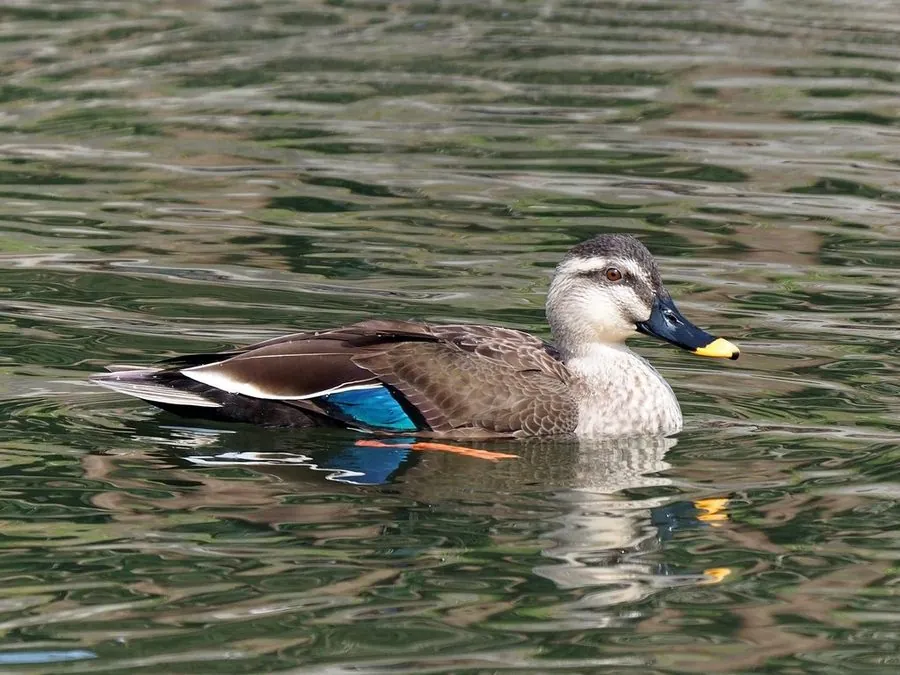

鸟类 · 动物界
斑嘴鸭 Anas zonorhyncha

东亚常见的深褐色鸭类，喙黑色、尖端鲜黄，翼镜蓝绿，常成群在湖泊、稻田与河口活动，是中国最常见的野鸭之一。
- 分类
- 门脊索动物门纲鸟纲目雁形目科鸭科属鸭属
- 栖息环境
- 湖泊、沼泽、稻田、河口、水库与缓流河湾，常靠近水生植物丰富处
- 地理分布
- 东亚，繁殖于中国东北、蒙古东部、俄罗斯远东和日本，越冬于中国南方及东南亚
- 保护级别
- IUCN 无危（LC）
物种志
斑嘴鸭体长 55–63 cm，体重 750–1500 g，雌雄羽色相近。通体深褐色，羽毛边缘浅色形成鳞状斑纹，头顶和眼纹深暗，颊部浅色；喙黑色，尖端有一块鲜黄色斑，这是它最醒目的识别特征；翼镜蓝绿色，飞行时翼下覆羽白色。
它们分布于东亚，繁殖于中国东北、蒙古东部、俄罗斯远东及日本，冬季南迁至中国南方、东南亚和印度东北部。斑嘴鸭栖息于湖泊、沼泽、稻田、河口与水库，常与绿头鸭等其他野鸭混群。繁殖期在 4–6 月，在水边草丛中筑巢，每窝产卵 8–14 枚，雌鸟孵化约 24 天。食物以水生植物、谷物为主，也吃螺类和水生昆虫。它们是中国最常见的野鸭之一，也是家鸭的祖先之一。
形态与习性
- 食性水生植物、谷物、螺类和水生昆虫
- 体长55–63 cm
- 体重750–1500 g
- 繁殖4–6 月，每窝 8–14 枚，孵化约 24 天
- 寿命约 10 年
- 特征黑喙黄尖，翼镜蓝绿色
趣味知识
- 斑嘴鸭的喙端有一块鲜黄色斑，黑喙黄尖是野外识别它的关键。
- 它是家鸭的祖先之一，与绿头鸭一样参与了家鸭的形成。
- 冬季它们常成上百只的大群在稻田和浅湖中觅食。